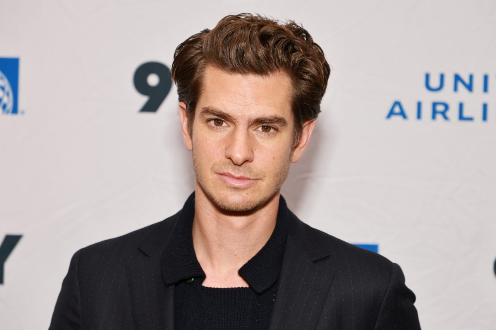
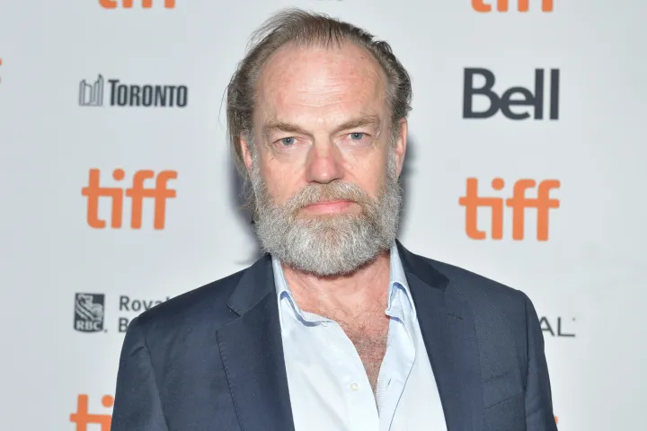
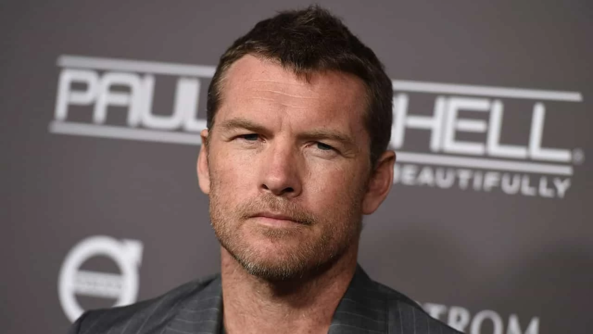
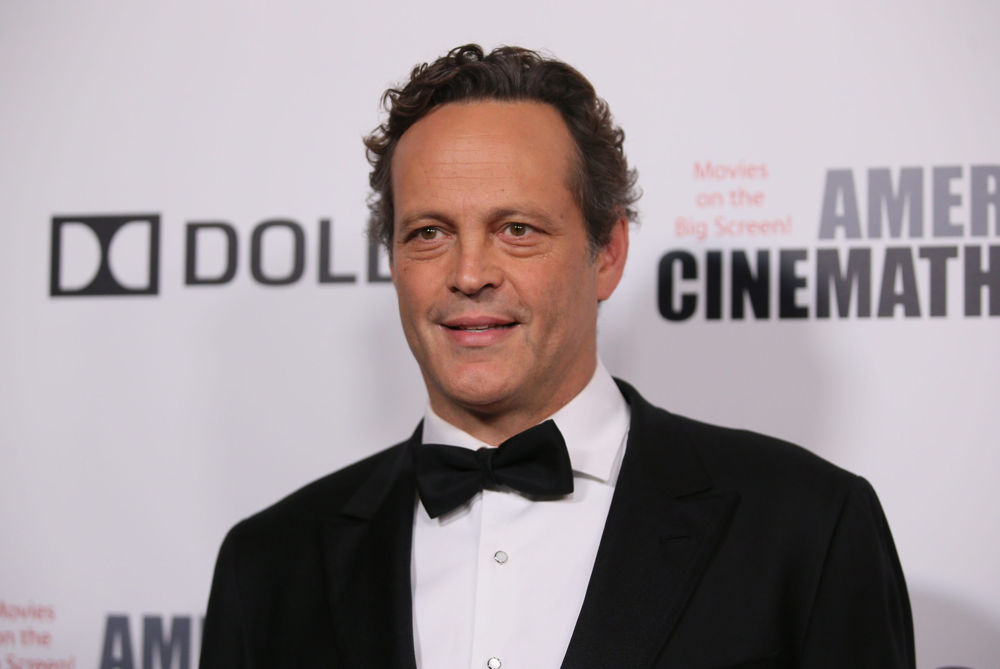
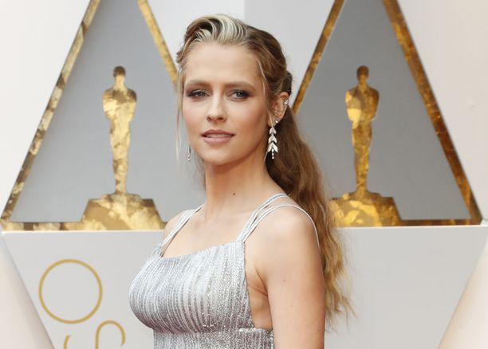

Em 2004, iniciou sua carreira em produções teatrais e televisivas, como na peça Kes, pela qual ganhou o Prêmio Manchester Evening News Theatre de Melhor Revelação, e no seriado Sugar Rush (2005). Realizou sua participação no cinema com filme Lions for Lambs (2007) e, ainda naquele ano, seu desempenho em Boy A rendeu-lhe o prêmio BAFTA de Melhor Ator em Televisão.

Hugo Wallace Weaving (Ibadan, 4 de abril de 1960) é um ator e dublador anglo-australiano, nascido na Nigéria. Ele estudou na National Institute of Dramatic Art, Sydney. Desde então tem aparecido em numerosas produções de teatro e televisão. Atuou em mais de 80 filmes, da qual se destaca o seu personagem Agente Smith, da trilogia Matrix; Elrond na trilogia O Senhor dos Anéis; a voz de Megatron, em Transformers; V em V de Vingança; Caveira Vermelha em Capitão América: O Primeiro Vingador e de Tick/Mitzi Del Bra em Priscilla, a Rainha do Deserto.

Samuel Henry John "Sam" Worthington (Godalming, 2 de agosto de 1976) é um ator australiano nascido na Inglaterra. Se tornou conhecido principalmente por seus papéis no cinema como Jake Sully no premiado Avatar, Marcus Wright em Terminator Salvation e como Perseu no remake de 2010 Clash of the Titans. Sam atuou em Terminator Salvation por indicação de James Cameron, havia atuado em seu filme, Avatar,[1] como Jake Sull

Vincent Anthony "Vince" Vaughn (28 de março de 1970 Mineápolis, Minnesota) é um ator de cinema americano, roteirista, produtor, comediante e ativista. Ele começou a atuar no final de 1980, aparecendo em pequenos papéis para a televisão, mas alcançou o reconhecimento a partir de 1996, atuando no filme Swingers (Curtindo a Noite). Ele já apareceu em vários filmes, incluindo The Lost World: Jurassic Park (Jurrassic Park 2 o Mundo Perdido), Psycho (1998) (Psicose Remake), Return to Paradise (Pela vida de um amigo), Old School (Dias incriveis), Dodgeball: A True Underdog Story (Com a bola toda), Wedding Crashers (Penetras Bom de Bico), The Break-Up (Separados pelo casamento), Fred Claus (Titio Noel), Couples Retreat (Encontro de Casais)

Teresa Edwina Palmer (Adelaide, 26 de fevereiro de 1986) é uma atriz e modelo australiana.[1] Trabalhou em diversos filmes, entre eles, The Grudge 2 e December Boys, ao lado de Daniel Radcliffe. Em 2008 trabalhou com Adam Sandler no filme Bedtime Stories. Atuou em O Aprendiz de Feiticeiro ao lado de Nicolas Cage e Jay Baruchel. Em 2011 foi a personagem "Número 6" no filme de ficção científica I Am Number Four.
Em 2013 atuou em Warm Bodies com Nicholas Hoult. Fez a personagem Tori Frederking em Take Me Home Tonight ao lado do seu ex-namorado Topher Grace. Casou-se com o diretor Mark Webber em 21 de dezembro de 2013 no México. Eles têm três filhos juntos: Bodhi Rain Palmer, nascido em 17 de fevereiro de 2014, Forest Sage Palmer, nascido em 12 de dezembro de 2016, Poet Lake Palmer, nascida a 12 de abril de 2019 e Prairie Moom , nascida em 2021.